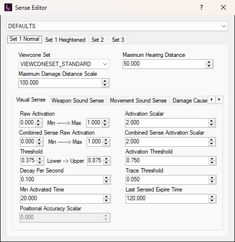

To edit character senses in OpenCAGE navigate to View > Configuration Editors > Characters > Senses. This opens the Sense Editor.
Pick a character from the dropdown at the top of the window to see its senses. Below it are four tabs, one per sense set. Each set has a viewcone set and two other values at the top, then a tab for each of eight senses.

There is no Save button: changes are saved as you make them. They're written to the character's own file, DATA/CHR_INFO/ATTRIBUTES/<character>.BML, under Attribute/Senses. The same file holds the character's attributes and locomotion.
A character's file can name another character as its template. Where the selected character doesn't set a value itself, the editor shows the value from its template. When the editor opens it saves every character, writing the values each one inherits into its own file, so every file holds its full set of senses. A box with no value in the character or any of its templates is greyed out and isn't saved.
Note that some of these values are additionally increased/decreased by the current game difficulty config. Its Character Senses section covers the visual, weapon sound, movement sound and flashlight senses, and the maximum hearing distance.
To get back to stock values, open the Backup Manager, click Revert Configs, then Reset Character Attributes, Senses, Viewcones. That overwrites the stock character files under DATA/CHR_INFO/ATTRIBUTES with the vanilla ones, so it undoes attribute and locomotion changes as well. It also closes the game if it's running.
Each character has four sense sets, one per tab: Set 1 Normal, Set 1 Heightened, Set 2 and Set 3. Every set has the same fields. Script can change a character's sense set with the NPC_SetSenseSet entity, and a behaviour tree can with the SetSenseSet decorator.
These three values sit at the top of each set, above its sense tabs:
Viewcone Set
combobox
VIEWCONESETS.BML: VIEWCONESET_NONE (the player's), VIEWCONESET_STANDARD, VIEWCONESET_HUMAN, VIEWCONESET_SLEEPING, VIEWCONESET_ANDROID and VIEWCONESET_HUMAN_HEIGHTENED. A set a character names that isn't on the list is shown as it is, and kept.Maximum Hearing Distance
float
Maximum Damage Distance Scale
float
Under those values is a tab for each sense: Visual Sense, Weapon Sound Sense, Movement Sound Sense, Damage Caused Sense, Touched Sense, See Flashlight Sense, Affected by Flamethrower Sense and Combined Sense.
Every sense tab has the same fields, listed under Sense Values. Each sense in each set has its own copy of them.
These are the fields on every sense tab, in the order they appear, row by row.
Raw Activation
float
Activation Scalar
float
Combined Sense Raw Activation
float
Combined Sense Activation Scalar
float
Threshold
float
Activation Threshold
float
Decay Per Second
float
Trace Threshold
float
Min Activated Time
float
Last Sensed Expire Time
float
Positional Accuracy Scalar
float